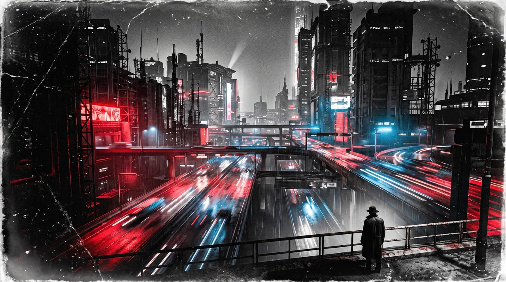

NOGUM

Acelerado
Daniel MartínCC BY-SA 4.0
Protocolo de inmersión inmediata
N·O·G·U·M
Acelerado
Un juego completo y sencillo para empezar esta misma tarde: cuatro modos de tono, una sola dificultad y nueve casillas de vida —tres en Terror—. Cuando se te quede pequeño, NOGUM te estará esperando.
NOGUM son cuatro piezas
Se leen por separado y se usan juntas. Las otras 3 están a un clic.
Juega ahora. Pregúntate luego por qué funciona.
Vas a jugar en diez minutos, sin leerte doscientas páginas. Aquí no hay teoría ni explicaciones: solo reglas que funcionan. Con ellas puedes jugar a tu universo favorito, sea el que sea.
Los jugadores no necesitan conocer las reglas. El trato es sencillo:
Tú declara tu acción y tira. Yo te cuento qué pasa.
El Director traduce los números a historia. Nadie en la mesa tiene que oír la palabra «modificador» si no quiere.
Cinco minutos antes de la primera partida, o una tarde entera: la mesa habla antes de jugar. Es lo único de este manual que no se salta.
Las reglas trabajan para vosotros. Ignoradlas cuando os impidan hacer algo que la trama pide.
Antes de empezar, el Director responde dos bloques de preguntas sobre el universo que va a jugar. No preguntes «¿a qué juego jugamos?». Pregunta «¿cómo se siente este mundo?».
| Pregunta | Poco | Lo normal | Mucho |
|---|---|---|---|
| ¿El universo tiene favoritos? | Sí: los monstruos | No: a nadie | Sí: nosotros |
| Cuando un plan sale mal, ¿por qué es? | Porque el enemigo es competente y cruel | Porque a veces las cosas salen mal | Casi nunca sale mal; y si sale, hay una liana |
| ¿Cómo acaban estas historias? | Sobrevivir ya es ganar | Depende de lo que hagas | Los héroes ganan |
Quédate con la respuesta que más se repita. Si no se repite ninguna (poco, normal, mucho), decide la primera pregunta.
| Pregunta | Poco | Lo normal | Mucho |
|---|---|---|---|
| ¿La física es fiable? | Es un reloj | Es una película | Es una locura |
| ¿Qué pasa cuando alguien lo hace bien? | Sale bien, siempre | Sale bien casi siempre | Puede salir bien… con un precio |
| ¿Hay sorpresas absurdas? | Nunca | Alguna | Constantemente |
Quédate con la respuesta que más se repita. Si no se repite ninguna, decide la primera pregunta.
Cruza tus dos respuestas en la tabla:
| Optimismo \ Caos | Poco | Lo normal | Mucho |
|---|---|---|---|
| Mucho | Optimista | Optimista | Optimista |
| Lo normal | Neutro | Neutro | Caos |
| Poco | Terror | Terror | Terror |
El optimismo elige el modo y el caos decide una casilla. Son cuatro, y cada uno cambia una cosa y solo una:
Mira bien el tercero, porque es lo más raro y lo más importante de este manual: Caos y Neutro sacan adelante exactamente el mismo número de tiradas, un 50 % con la ficha a cero y un 70 % con la ficha a +2. Son idénticos hasta +3; a +4 se separan un poco, porque en Caos un 2 en el rojo sigue siendo pifia: 80 % contra 90 %. El caos no te hace fallar más. Cambia de qué está hecho lo que te pasa: donde Neutro reparte éxitos y fallos limpios, Caos reparte pifias, críticos y victorias con factura.
Y el cuarto es la otra forma de hacer daño. En Terror lo opresivo no está en los dados: está en lo frágil que eres. Tiras igual que en Neutro y aciertas igual de a menudo. Lo que cambia es que dos golpes serios te dejan fuera de combate. El manual completo llama a eso la vida fractal y la deja en tus manos; aquí viene puesta, para que la veas funcionar sin tener que decidir nada.
Tira siempre los dos dados, el rojo y el azul. Lo que cambia es cómo los lees:
| Modo | Qué dado cuenta | Pifia | Crítico | Resultado |
|---|---|---|---|---|
| Optimista | El mayor de los dos | Doble 1 | Un 10 en cualquiera | Total 6 o más: éxito |
| Neutro | Solo el rojo (el azul no cuenta) | 1 en el rojo | 10 en el rojo | Total 6 o más: éxito |
| Caos | Solo el rojo (el azul no cuenta) | 1 o 2 en el rojo | 9 o 10 en el rojo | Total 5 o menos: fallo · 6 o 7: éxito con coste · 8 o más: éxito |
| Terror | Solo el rojo (el azul no cuenta) | 1 en el rojo | 10 en el rojo | Total 6 o más: éxito · y solo 3 casillas de vida (2.7) |
Cómo se tira
Éxito con coste (solo en Caos). Lo consigues, pero pagas un precio. El Director elige uno:
Mejor no «lo consigues, pero pierdes una casilla de vida». Eso es pereza.
Tu bono sale de tu ficha y de la situación. La ficha solo da cinco valores posibles:
| Bono | Quién eres en esto |
|---|---|
| −2 | Nulo. No has puesto ni un punto en todo ese Ámbito. |
| −1 | Torpe. Tienes el Ámbito, pero esa columna está vacía: vas con el pie cambiado. |
| +1 | Me defiendo. Tienes una habilidad amplia que lo cubre. |
| +2 | Es mi trabajo. Tienes una habilidad concreta que lo cubre. |
| +4 | Gran Maestro. Nadie lo hace mejor. |
Dificultad. Si la tarea es fácil, +2. Si es difícil, −2. Si es heroica, −4. Lo normal es 0. La dificultad se suma al bono; la TN no se mueve.
Límites. Suma habilidad, dificultad y cualquier otro modificador: se acumula lo que se pueda, a criterio de la mesa. Si el total pasa de +4, tiras con +4, y lo que sobra puedes aprovecharlo para intentar algo más difícil y con más premio. Si baja de −2, el Director decide si hay derecho a tirada; si lo hay, se tira con −2. El bono con el que tiras queda entre −2 y +4.
No tires por tirar. Tira solo si todos los resultados posibles son interesantes. Si fallar no aporta nada, sucede y ya está. Lo imprescindible para la historia —la pista sin la que no hay aventura— no se tira: se encuentra. Lo que se tira es cuánto sacas y a qué precio.
Todo personaje tiene cinco Ámbitos: Físico, Mental, Social, Técnico y Arcano (la magia, los poderes psíquicos, lo sobrenatural; si tu mundo no los tiene, ignóralo). Los Ámbitos no son habilidades: son los cajones donde las guardas.
Cada Ámbito se parte en dos habilidades amplias, y cada una en cuatro habilidades concretas. La lista es cerrada:
| Ámbito | Habilidad amplia (columna) | Habilidades concretas |
|---|---|---|
| Físico | Destreza | Atletismo · Acrobacia · Sigilo · Juego de manos |
| Vigor | Potencia · Entereza · Pelea · Armas | |
| Mental | Erudición | Ciencias · Humanidades · Ocultismo · Actualidad |
| Ingenio | Investigación · Alerta · Táctica · Supervivencia | |
| Social | Influencia | Persuasión · Engaño · Empatía · Seducción |
| Jerarquía | Liderazgo · Intimidación · Contactos · Recursos | |
| Técnico | Artificio | Mecánica · Electrónica · Biotecnia · Artesanía |
| Operaciones | Pilotaje · Vuelo · Sistemas · Seguridad | |
| Arcano | Don | Proyección · Alteración · Adivinación · Protección |
| Ritual | Alquimia · Invocación · Encantamiento · Vínculos |
Tienes 12 puntos. Si algún jugador de la mesa pone algo en Arcano, todos tenéis 14, también quien no lo toca: el Arcano añade diez habilidades a la ficha de todos, y nadie tiene más puntos por tener magia. Si en vuestro mundo hay magia pero no está al alcance de los jugadores, son 12. Cada escalón cuesta un punto —salvo la Firma, que cuesta dos— y para subir un escalón hay que haber pagado el anterior:
| Escalón | Qué es | Ejemplos | Cuesta | Puntos acumulados | Bono |
|---|---|---|---|---|---|
| Habilidad amplia | Media parte de un Ámbito | Destreza, Vigor, Erudición, Ingenio, Influencia | 1 | 1 | +1 |
| Habilidad concreta | Un oficio dentro de la amplia | Vigor → Armas · Erudición → Ciencias · Influencia → Engaño | 1 | 2 | +2 |
| Firma (Gran Maestro) | Tu especialidad dentro del oficio | Armas → Armas de fuego · Ciencias → Química · Acrobacia → Parkour | 2 | 4 | +4 |
El bono dice lo bien que haces algo. La Rejilla dice a qué escala lo haces. Cada personaje tiene un nivel por Ámbito. Pregúntate: si esto se descontrola, ¿qué sale en las noticias?
| Nivel | Escala | Ejemplos |
|---|---|---|
| 1 | Una persona | Cualquier humano, por experto que sea: el boxeador, el profesor de química, el hacker. |
| 2 | Una sala, cientos de personas | Un humano excepcional o algo que ya no lo es, solo si tu universo lo permite: el bárbaro de la estepa, el soldado del suero, la presencia del vampiro. Un soldado raso no tiene nada que hacer contra ellos. |
| 3 | Un edificio, un barrio | Derribar un castillo, apagar la red eléctrica de un rascacielos. |
| 4 | Una gran ciudad | Un escudo místico sobre la ciudad, un monstruo que arrasa distritos. |
| 5 | Un país | Cambiar la geografía. Solo para finales de campaña. |
| 6 | Un planeta, lo cósmico | Casi siempre injugable: la mayoría de universos no lo tienen, y lo que hay ahí se toca con Llaves. |
Si en tu mundo los números significan algo, como en los que emulan el real, cada nivel multiplica por cien tu alcance: ×1 una persona, ×100 una sala, ×10.000 un edificio, ×1.000.000 una ciudad, ×100.000.000 un país. Cuando alguien te saca un nivel no es que sea mejor que tú: es que juega con dos ceros más, y por eso no tienes derecho a tirada. En un mundo de cómic o de leyenda manda la historia: el de arriba es el tema de la historia, y la escala la pones tú, o ninguna.
Si no sabes qué nivel poner, los humanos son nivel 1 en todo. Lo que se mide es la escala, no la inteligencia ni los músculos: un químico genial sigue siendo nivel 1. Y si un salto de nivel te suena a cómic, es porque lo es.
Cinco ideas que lo resuelven casi todo
Los casos difíciles, resueltos uno a uno, están en el capítulo de la Llave del manual completo.
El salto de poder
Vale para todos: jugadores y adversarios. Compara el nivel de Rejilla de quien actúa con el de aquello contra lo que actúa, en el Ámbito de la acción. Un PNJ o un monstruo tiene un solo nivel para todo, salvo que el Director diga otra cosa.
La Llave. Una Llave es una razón narrativa que te permite afectar a algo de nivel superior: un bazuca, la piedra de su propio mundo, una contraseña de administrador robada, un vídeo del soborno, veinte mercenarios disparando a la vez. Te pone un nivel de Rejilla por encima del tuyo (o varios, pagando más), y en esa tirada actúas como ese nivel: si eres 1 y la Llave te pone en 2, quien está a nivel 1 no tiene derecho a tirada; contra un 2, tiras con normalidad, con tu bono completo. La que te da la ficción cubre lo que la ficción diga y dura una escena; la tuya, la que compras, cubre toda una habilidad concreta, contra cualquier objetivo (abajo). Conseguirla suele ser una aventura en sí misma.
Las Llaves se compran
Cuando empieza el combate, cada participante tira con el modo activo y suma su mejor bono en Destreza (la habilidad amplia o cualquier habilidad concreta suya). Se actúa de mayor a menor total. Si hay empate, decide el Director.
El combate es una negociación agresiva. Cada ataque se resuelve en dos pasos.
Paso 1 · El impacto (tira el atacante)
Tira tu habilidad de ataque contra la TN 6. Las circunstancias del defensor (cobertura, niebla, tamaño) cambian la dificultad. Las habilidades del defensor no cuentan aquí.
Paso 2 · La mitigación (tira el defensor)
Si el arma lo permite (mira sus etiquetas), el defensor hace una sola reacción: esquivar (Destreza → Acrobacia) o absorber (Vigor → Entereza), según la vía que el arma deje abierta.
La defensa gana los empates. Los dos tiráis contra la misma TN y comparáis el nivel de resultado: pifia < fallo < éxito con coste (solo en Caos) < éxito < crítico.
Daño final = daño del arma (+1 por crítico del atacante, +1 por pifia del defensor) − reducción del defensor, dentro de los límites de las etiquetas.
Peligros sin atacante (caídas, fuego, el entorno): cuentan como un ataque con éxito de su nivel; si son extremos, como un crítico; los enormes llevan La Parca con su nivel.
Las etiquetas mandan sobre el empate. Con Esq: Parcial comes al menos 1 aunque iguales, y con Esq: Nula no hay esquiva que tirar: si el arma deja absorber, te queda la absorción.
En Caos, un éxito con coste en combate conecta o defiende como un éxito, pero en la comparación vale un nivel de resultado menos, y el Director añade un coste del menú (el ataque conecta, pero pierdes el arma; esquivas, pero caes al suelo).
Las armas. Toda arma, poder o peligro se describe con tres etiquetas:
| Etiqueta | Valores | Qué significa |
|---|---|---|
| Daño 1 | Leve | Puños, cuchillos, pistolas ligeras, caídas cortas. «Urgencias». |
| Daño 2 | Serio | Espadas de guerra, magnum, garras. «UCI». |
| La Parca | No es un valor de daño | Artillería, explosivos de guerra, un coche a toda velocidad. Es una Llave al daño. Lleva nivel de Rejilla, que se compara con el Físico del objetivo. Si te alcanza y estás por debajo, se te da fuera de combate, sin derecho a tirada: no hay absorción que valga. Si se puede esquivar, lo dice su etiqueta Esq: el francotirador que no ves (Esq: Nula) no se esquiva —se evita, no estando ahí—; una granada, por su área, se esquiva a duras penas: −2. A su altura hace Daño 2 y te defiendes normal, con sus etiquetas. Por encima de ella, nada sin Llave. |
| Esq: Total | Esquiva libre | Cuerpo a cuerpo, flechas, proyectiles lentos. Esquivando puedes quedarte en 0. |
| Esq: Parcial | Esquiva limitada | Área, ráfagas, fuego. Aunque esquives, recibes al menos 1. |
| Esq: Nula | Sin esquiva | Instantáneos, mentales, disparo por sorpresa. Y las armas de fuego, a nivel 1: una bala no se esquiva. |
| Esq: Difícil / Esq: Fácil | Modificador | −2 / +2 a la tirada de esquiva. |
| Abs: Total | Absorción libre | La protección funciona: absorbiendo puedes quedarte en 0. |
| Abs: Máx 1 | Absorción limitada | Martillos, perforantes: se reduce como mucho 1. |
| Abs: Nula | Sin absorción | Veneno de contacto, magia psíquica, la bala que atraviesa cualquier blindaje. |
Ejemplos para empezar:
| Arma | Ficha técnica |
|---|---|
| Puños, cuchillo | Daño 1 Esq: Total Abs: Total |
| Espada, hacha de guerra | Daño 2 Esq: Total Abs: Total |
| Maza, martillo de guerra | Daño 2 Esq: Total Abs: Máx 1 |
| Arco | Daño 1 Esq: Total Abs: Total |
| Pistola, revólver | Daño 1 Esq: Nula Abs: Total |
| Magnum, escopeta | Daño 2 Esq: Nula Abs: Total |
| Pistola bláster (ópera espacial: se esquiva por convenio del género) | Daño 2 Esq: Total Abs: Máx 1 |
| Granada, explosivo de guerra | La Parca · Rejilla 2 Esq: Difícil (−2) Abs: Nula |
| Rifle láser | Daño 2 Esq: Nula Abs: Total |
| Francotirador (por sorpresa) | La Parca · Rejilla 2 Esq: Nula Abs: Nula |
Una Parca por encima de tu nivel es una Llave (idea 3). Si es un poder tuyo, cuesta Llaves como cualquier otra: n², con n los niveles que te saca. Si es equipo, aquí se paga solo con dinero, como todo el equipo (2.9), y una granada, que es de un solo uso, ni siquiera ocupa sitio.
Todo personaje tiene 9 casillas de vida, en tres bloques de tres. Cada punto de daño tacha una casilla.
Salvo en Terror
En el modo Terror no son nueve: son 3 casillas, un solo bloque. Al llenarlo estás fuera de combate. Con el daño de este manual eso significa que dos impactos serios te sacan de la escena, y que basta uno si el atacante saca crítico y no lo paras.
No es un interruptor que tengas que acordarte de encender. Viene con el modo, y es la única pieza de este manual que te deja asomarte a lo que el completo llama vida fractal: ahí la letalidad es un mando y lo giras tú, con tres bloques, nueve casillas o veintisiete puntos.
| Bloque | Casillas | Al llenarlo |
|---|---|---|
| Primero | 1–3 | −1 a las acciones que la herida estorbe (un ojo hinchado, una mano rota). |
| Segundo | 4–6 | −3 (sustituye al −1) y pierdes las acciones complejas (una pierna inútil, una hemorragia). |
| Tercero | 7–9 | Fuera de combate. |
La regla del Estilo
Todo personaje tiene Estilo +2. Cuando te enfrentas a enemigos por debajo de tu nivel en la Rejilla, o a simples masillas (el decorado de la escena), no se tira para ver si ganas: se da por hecho. Tiras con el modo activo y sumas tu Estilo para ver cómo ganas:
Los masillas son decorado: los declara el Director, no tienen ficha ni tirada y actúan como si estuvieran un nivel de Rejilla por debajo de vosotros, así que no te hacen daño ni se les cuentan casillas de vida. Cada tirada de Estilo tumba a uno, y con crítico a varios. Si un enemigo puede hacerte daño, no es decorado: tiene ficha rápida (3) y tira normal.
El Estilo encaja con el anime, el wuxia, la space opera y el cine de acción. No se recomienda en universos muy serios: en una guerra realista, hasta el último soldado tira.
Aquí el equipo solo cuesta dinero, y el dinero es tu bono en Recursos (Social → Jerarquía → Recursos). Si tu cajón llega, lo tienes, sin gastar puntos ni Llaves: también la pistola o la granada, que en el manual completo piden Llaves. Lo que sí pide es sitio: tres objetos.
| Recursos | Quién eres | Lo que llevas encima | Acceso |
|---|---|---|---|
| −2 | No tienes nada y nadie te fía | Ropa, un cuchillo, lo que encuentres o te presten | 0, y lo que encuentres |
| −1 | Vives al día, sin colchón | Lo básico y de segunda mano: herramientas sencillas, un arma pequeña y vieja | 0 |
| +0 | Un sueldo, o un grupo que te cubre | Un arma pequeña, herramientas, un trasto con ruedas | 0 · 1 con esfuerzo |
| +1 | Ahorros y contactos | Un arma seria, protección ligera, un vehículo decente | 1 · 2 con esfuerzo |
| +2 | Dinero de verdad, o un patrón que paga | Material militar, armadura, un vehículo blindado | 2 · 3 con esfuerzo |
| +4 | Mueves presupuestos que no son tuyos y el dinero ha dejado de ser el problema | Un equipo de gente, y lo que no debería existir | 3 |
Acceso es el nivel de Recursos que pide un objeto: la columna dice hasta cuál llegas, y «con esfuerzo», el escalón de más (abajo).
Los jugadores no oyen reglas: oyen historia. Esta tabla traduce lo que dice la regla a lo que tú narras.
| Si la regla es… | Narra algo como… |
|---|---|
| Empezamos en modo Optimista | «La música sube. Sentís que hoy no podéis fallar.» |
| Empezamos en modo Neutro | «El mundo no está de vuestra parte ni en vuestra contra. Lo que hagáis, eso tendréis.» |
| Empezamos en modo Terror | «Sentís un peso en el estómago. Aquí nadie va a venir a salvaros.» |
| Éxito con coste (Caos) | «Lo consigues… pero» + un coste del menú: tiempo, recurso, posición o fuego amigo. |
| Pifia | «Algo sale espectacularmente mal.» Y que sea interesante, no solo humillante. |
| Crítico del atacante | «Le das justo donde duele.» (+1 al daño.) |
| Arma con Esq: Nula | «No intentes esquivar. Si disparan, te darán. Solo puedes cubrirte.» |
| Arma con Abs: Nula | «Tu armadura no sirve de nada contra esto.» |
| Primer bloque de vida lleno (−1) | «Te han marcado. Cada movimiento te lo recuerda.» |
| Segundo bloque lleno (−3) | «Olvida los rasguños. El último golpe ha roto algo dentro. Luchas por mantenerte en pie.» |
| Fuera de combate | «Todo se vuelve negro.» Y luego, a la historia: ¿quién te encuentra? |
| Algo por encima de tu nivel, sin Llave | «Sí, es un tanque. Sí, eres humano. No tiras. Corres.» |
| Hay una Llave posible | «Esa cosa es invulnerable… a menos que encontréis lo que la hiere.» |
| Enemigos por debajo (Estilo) | «No es si los tumbas. Es cómo.» |
| Tirada innecesaria | No digas nada de dados: «Lo haces.» |
Improvisar un enemigo en diez segundos. Pregúntate si importa. Si no importa, es decorado: sin ficha ni tirada, va con Estilo y no te hace daño. Si puede hacerte daño, ya importa un poco: dale un nivel de Rejilla, una habilidad a +2 (todo lo demás a +0) y las casillas de vida que quieras que dure la pelea (3 por defecto). Si es el villano, hazle una ficha completa como la de un jugador.
Los PNJ tiran con el mismo modo que la mesa, y hacen una sola reacción (defensa) por cada ataque que reciben.
Ya tienes todo lo necesario para jugar a tu propio universo.
Pero habrás notado los límites. Aquí el tono es fijo: si empiezas en Optimista, juegas en Optimista toda la tarde. ¿Y si quieres que la aventura empiece como una fantasía luminosa y acabe como una pesadilla? ¿Que la escena del jefe final cambie la física a mitad de combate? ¿Que un personaje concreto viva en su propio tono?
En NOGUM aprendes por qué funciona cada regla de este manual, y con eso:
Allí las cosas cambian de nombre, no de sitio: la habilidad amplia se llama Dominio, y la concreta, Disciplina.
Pruébalo, toquetéalo y, si te gusta y te suscita preguntas, vuelve. Si quieres ver ejemplos de cómo emular universos con este motor, el manual completo te está esperando.
Hoja de personaje · NOGUM Acelerado
Nombre
Concepto
Jugador
Modo Optimista Neutro Caos Terror
Puntos / 12 · 14 con Arcano
| FísicoDestreza · VigorRejilla | ||
| MentalErudición · IngenioRejilla | ||
| SocialInfluencia · JerarquíaRejilla | ||
| TécnicoArtificio · OperacionesRejilla | ||
| ArcanoDon · RitualRejilla |
Amplia +1 (1 punto) · concreta +2 (1 punto) · Firma +4 (2 puntos). Ámbito vacío: −2. La otra columna de un Ámbito con algo: −1 (2.3).
Llaves ·
| Habilidad concreta | Solo contra | Niv. |
|---|---|---|
Bote aparte: +1 Rejilla en ______ 5 Llaves. Experiencia de salida: ______ (2.4). «Solo contra», si es Limitada. Las prestadas, a lápiz.
Vida
En Terror, solo el último bloque: tres casillas y fuera (2.7). A salvo, se borran; las heridas se quedan.
Equipo · tres objetos
| Objeto | Daño | Esq | Abs |
|---|---|---|---|
Lo que te permita Recursos. Para uno nuevo, sueltas uno; lo de un solo uso no cuenta (2.9).
Ventajas, lacras, heridas y notas
Chuleta de mesa · los cuatro modos
Optimista
El universo está de tu parte.
Neutro
La referencia: nada cambia.
Caos
Los éxitos cobran peaje.
Terror
Dos golpes serios y fuera.
La tirada (2.1–2.2)
Éxito con coste (solo Caos)
La Rejilla (2.4)
El combate (2.5–2.6)
El Estilo (2.8)
La vida (2.7)
El equipo (2.9)
Tres ejemplos para empezar ya, de tres mundos distintos. Kira y Tomás gastan 12: en el mundo de Kira no hay magia, y en el de Tomás la hay, pero él no la toca. Ysolde gasta 14, y si juega en la misma mesa que ellos, ellos también tendrían 14. Cada uno usa además su bote aparte, y Ysolde, 1 Llave de experiencia de salida para su fuego (abajo).
Kira «Grapa» Ortega · mercenaria urbana (ciberpunk / actualidad)
| Ámbito | Rejilla | Habilidades | Puntos |
|---|---|---|---|
| Físico | 1 | Vigor +1 → Armas +2 → Armas de fuego +4 · Vigor → Entereza +2 · Destreza +1 → Acrobacia +2 | 7 |
| Mental | 1 | Ingenio +1 → Alerta +2 | 2 |
| Social | 1 | Jerarquía +1 → Intimidación +2 · Jerarquía → Contactos +2 | 3 |
| Técnico | 1 | Vacío: −2 | 0 |
| Arcano | — | No existe en su mundo | 0 |
Estilo +2 · Iniciativa +2 (Acrobacia) · Esquiva +2 (Acrobacia) · Absorción +2 (Entereza; +3 con la chaqueta) · Recursos +1 (Jerarquía).
Equipo: pistola pesada Daño 2 Esq: Nula Abs: Total · cuchillo Daño 1 Esq: Total Abs: Total · chaqueta blindada (ligera, +1 a la absorción). Sus tres objetos.
Bote aparte: 5 Llaves — «Armas», «Intimidación» y tres en blanco, por decidir en la sesión 0.
En mesa: dispara a +4 y esquiva bien, pero con cualquier aparato es una nulidad (−2): si hay que abrir una puerta electrónica, que lo haga otro. Con su Llave de Armas dispara como alguien de nivel 2: contra sus balas, un matón corriente no tiene derecho a tirada, y contra un cromado de nivel 2 tira con su +4.
Dr. Tomás Areces · investigador de lo oculto (horror contemporáneo)
| Ámbito | Rejilla | Habilidades | Puntos |
|---|---|---|---|
| Mental | 1 | Erudición +1 → Ocultismo +2 → Cultos y grimorios +4 · Erudición → Humanidades +2 · Ingenio +1 → Investigación +2 · Ingenio → Alerta +2 | 8 |
| Social | 1 | Influencia +1 → Empatía +2 · Influencia → Engaño +2 | 3 |
| Físico | 1 | Destreza +1 | 1 |
| Técnico | 1 | Vacío: −2 | 0 |
| Arcano | 1 | Vacío: −2 | 0 |
Estilo +2 · Iniciativa +1 (Destreza) · Esquiva +1 (Destreza) · Absorción −1 (Torpe: tiene algo en Físico, pero no Vigor) · Recursos −1 (Torpe: tiene Influencia, pero no Jerarquía).
Equipo: revólver viejo Daño 1 Esq: Nula Abs: Total. La linterna y el cuaderno de notas se dan por hechos.
Bote aparte: 5 Llaves, que son su personaje entero — «Ocultismo», «Investigación», y tres por descubrir.
En mesa: sabe más que nadie de lo que no debería existir, pero no puede tocarlo (Arcano vacío) y cualquier monstruo está por encima de su nivel. Su juego es encontrar Llaves. Con modo Terror, perfecto.
Ysolde de Brasa · canalizadora errante (fantasía)
| Ámbito | Rejilla | Habilidades | Puntos |
|---|---|---|---|
| Arcano | 2 | Don +1 → Proyección +2 → Fuego +4 · Don → Protección +2 · Ritual +1 → Invocación +2 | 7 |
| Mental | 1 | Erudición +1 → Ocultismo +2 · Erudición → Humanidades +2 | 3 |
| Físico | 1 | Destreza +1 → Sigilo +2 | 2 |
| Social | 1 | Influencia +1 → Persuasión +2 | 2 |
| Técnico | 1 | Vacío: −2 | 0 |
Estilo +2 · Iniciativa +2 (Sigilo) · Esquiva +1 (Destreza) · Absorción −1 (Torpe) · Recursos −1 (Torpe) · Escudo mágico: puede absorber con Protección (+2) si el Director lo permite.
Su fuego (un hechizo, no equipo): Daño 2 Esq: Parcial Abs: Máx 1, al nivel de una sala entera · Equipo: bastón Daño 1 Esq: Total Abs: Total.
Bote aparte: +1 nivel de Rejilla en Arcano, su 2. Experiencia de salida: 1 Llave, la de su fuego. Un hechizo es un permiso y se paga con Llaves: la Rejilla dice el tamaño, no qué puedes hacer. Con su Arcano 2 el fuego llega a la sala entera sin pagar más nivel, así que le basta 1 Llave; y como el bote se le fue en el 2, esa Llave la pone la experiencia de salida.
En mesa: con Arcano 2, su fuego limpia una taberna llena de bandidos de nivel 1 sin tirar para acertar: tira Estilo. Contra un dragón necesita una Llave. Su nivel 2 en Arcano es su bote aparte: ha gastado ahí lo que los otros dos se gastan en Llaves. Su ficha es la salida recomendada, 1·1·1·1·2, con el 2 donde su mundo lo permite.
Esta obra se publica bajo Creative Commons Atribución-CompartirIgual 4.0. Puedes copiarla, traducirla, modificarla y construir encima, también con ánimo de lucro, con dos condiciones: cita al autor y publica lo que construyas bajo la misma licencia.
Cómo se cita. «NOGUM, de Daniel Martín · CC BY-SA 4.0», con enlace al original donde el medio lo permita.
Las reglas son libres. Las mecánicas de juego no son objeto de derechos de autor. Puedes escribir material compatible con este sistema sin pedirle permiso a nadie: la licencia cubre este texto, no el motor. Si lo que quieres es construir sobre NOGUM, ya puedes.
Lo que la licencia no cubre. El nombre NOGUM y sus signos de identidad. El contenido es libre; el nombre se queda con su autor, para que nadie firme en su lugar.
Daniel Martín · CC BY-SA 4.0
NOGUM
Accelerated
Daniel MartínCC BY-SA 4.0
Immediate immersion protocol
N·O·G·U·M
Accelerated
A complete, simple game you can start this very evening: four tone modes, one difficulty and nine health boxes —three in Terror—. When you outgrow it, NOGUM will be waiting.
NOGUM is four pieces
They are read separately and used together. The other 3 are one click away.
Play now. Ask yourself why it works later.
You will be playing in ten minutes, without reading two hundred pages. There is no theory and no explanation here: only rules that work. With them you can play in your favourite universe, whichever it is.
The players do not need to know the rules. The deal is simple:
You declare your action and roll. I tell you what happens.
The GM translates the numbers into story. Nobody at the table has to hear the word “modifier” if they don't want to.
Five minutes before the first game, or a whole afternoon: the table talks before playing. It is the one thing in this rulebook you do not skip.
The rules work for you. Ignore them when they stop you from doing something the plot asks for.
Before starting, the GM answers two sets of questions about the universe they are going to play. Don't ask “which game are we playing?”. Ask “how does this world feel?”.
| Question | Little | Normal | A lot |
|---|---|---|---|
| Does the universe have favourites? | Yes: the monsters | No: nobody | Yes: us |
| When a plan goes wrong, why? | Because the enemy is competent and cruel | Because sometimes things go wrong | It hardly ever goes wrong; and if it does, there's a vine to swing from |
| How do these stories end? | Surviving is already winning | It depends on what you do | The heroes win |
Go with the answer that comes up most often. If none repeats (little, normal, a lot), the first question decides.
| Question | Little | Normal | A lot |
|---|---|---|---|
| Is physics reliable? | It's clockwork | It's a film | It's madness |
| What happens when someone does it right? | It works, always | It works, almost always | It may work… at a price |
| Are there absurd surprises? | Never | Some | Constantly |
Go with the answer that comes up most often. If none repeats, the first question decides.
Cross your two answers on the table:
| Optimism \ Chaos | Little | Normal | A lot |
|---|---|---|---|
| A lot | Optimistic | Optimistic | Optimistic |
| Normal | Neutral | Neutral | Chaos |
| Little | Terror | Terror | Terror |
Optimism picks the mode and chaos decides one box. There are four, and each changes one thing and one thing only:
Look hard at the third one, because it is the strangest and the most important thing in this book: Chaos and Neutral bring exactly the same number of rolls home, 50 % with the sheet at zero and 70 % with the sheet at +2. They are identical up to +3; at +4 they drift slightly apart, because in Chaos a 2 on the red is still a fumble: 80 % against 90 %. Chaos does not make you fail more. It changes what happens to you is made of: where Neutral deals clean successes and clean failures, Chaos deals fumbles, criticals and wins that come with an invoice.
And the fourth is the other way to hurt. In Terror the oppression is not in the dice: it is in how fragile you are. You roll as in Neutral and you hit just as often. What changes is that two serious hits put you out of the fight. The Complete Game calls that fractal health and leaves it in your hands; here it comes preset, so you can watch it work without having to decide anything.
Always roll both dice, the red one and the blue one. What changes is how you read them:
| Mode | Which die counts | Fumble | Critical | Result |
|---|---|---|---|---|
| Optimistic | The higher of the two | Double 1 | A 10 on either | Total 6 or more: success |
| Neutral | Only the red one (the blue one doesn't count) | 1 on the red | 10 on the red | Total 6 or more: success |
| Chaos | Only the red one (the blue one doesn't count) | 1 or 2 on the red | 9 or 10 on the red | Total 5 or less: failure · 6 or 7: success at a cost · 8 or more: success |
| Terror | Only the red one (the blue one doesn't count) | 1 on the red | 10 on the red | Total 6 or more: success · and only 3 health boxes (2.7) |
How to roll
Success at a cost (Chaos only). You pull it off, but you pay a price. The GM picks one:
Better not “you pull it off, but you lose a health box”. That is laziness.
Your bonus comes from your sheet and from the situation. Your sheet only gives five possible values:
| Bonus | Who you are at this |
|---|---|
| −2 | Null. You haven't put a single point into that whole Sphere. |
| −1 | Clumsy. You have the Sphere, but that column is empty: you are on the wrong foot. |
| +1 | I get by. You have a broad skill that covers it. |
| +2 | It's my job. You have a specific skill that covers it. |
| +4 | Grand Master. Nobody does it better. |
Difficulty. If the task is easy, +2. If it is hard, −2. If it is heroic, −4. Normal is 0. Difficulty is added to the bonus; the TN does not move.
Limits. Add up skill, difficulty and any other modifier: stack whatever can be stacked, at the table's discretion. If the total goes above +4, you roll with +4, and you can use the surplus to attempt something harder with a bigger reward. If it drops below −2, the GM decides whether there is a right to roll; if there is, you roll at −2. The bonus you roll with stays between −2 and +4.
Don't roll for the sake of it. Roll only if every possible result is interesting. If failing adds nothing, it just happens. What the story cannot do without —the clue without which there is no adventure— is not rolled for: it is found. What you roll for is how much you get and at what price.
Every character has five Spheres: Physical, Mental, Social, Technical and Arcane (magic, psychic powers, the supernatural; if your world doesn't have them, ignore it). Spheres are not skills: they are the drawers you keep them in.
Each Sphere splits into two broad skills, and each of those into four specific skills. The list is closed:
| Sphere | Broad skill (column) | Specific skills |
|---|---|---|
| Physical | Dexterity | Athletics · Acrobatics · Stealth · Sleight of Hand |
| Vigour | Might · Fortitude · Brawling · Weapons | |
| Mental | Erudition | Sciences · Humanities · Occultism · Current Affairs |
| Wits | Investigation · Alertness · Tactics · Survival | |
| Social | Influence | Persuasion · Deception · Empathy · Seduction |
| Hierarchy | Leadership · Intimidation · Contacts · Resources | |
| Technical | Artifice | Mechanics · Electronics · Biotech · Crafting |
| Operations | Driving · Flight · Systems · Security | |
| Arcane | Gift | Projection · Alteration · Divination · Protection |
| Ritual | Alchemy · Summoning · Enchantment · Bonds |
You have 12 points. If any player at the table puts something into Arcane, everyone gets 14, including whoever doesn't touch it: Arcane adds ten skills to everyone's sheet, and nobody gets more points for having magic. If your world has magic but it is out of the players' reach, it stays at 12. Each step costs one point —except the Signature, which costs two— and to raise a step you must have paid for the previous one:
| Step | What it is | Examples | Cost | Cumulative points | Bonus |
|---|---|---|---|---|---|
| Broad skill | Half of a Sphere | Dexterity, Vigour, Erudition, Wits, Influence | 1 | 1 | +1 |
| Specific skill | A trade within the broad skill | Vigour → Weapons · Erudition → Sciences · Influence → Deception | 1 | 2 | +2 |
| Signature (Grand Master) | Your speciality within the trade | Weapons → Firearms · Sciences → Chemistry · Acrobatics → Parkour | 2 | 4 | +4 |
The bonus says how well you do something. The Grid says at what scale you do it. Each character has one level per Sphere. Ask yourself: if this gets out of hand, what makes the news?
| Level | Scale | Examples |
|---|---|---|
| 1 | One person | Any human, however expert: the boxer, the chemistry teacher, the hacker. |
| 2 | A room, hundreds of people | An exceptional human or something that no longer is one, only if your universe allows it: the barbarian of the steppe, the serum soldier, the vampire's presence. A rank-and-file soldier stands no chance against them. |
| 3 | A building, a neighbourhood | Bringing down a castle, cutting the power grid of a skyscraper. |
| 4 | A big city | A mystic shield over the city, a monster razing districts. |
| 5 | A country | Changing the geography. Only for campaign finales. |
| 6 | A planet, the cosmic | Almost always unplayable: most universes don't have it, and what is there is touched with Keys. |
If numbers mean something in your world, as in the ones that emulate the real one, each level multiplies your reach by a hundred: ×1 one person, ×100 a room, ×10,000 a building, ×1,000,000 a city, ×100,000,000 a country. When someone has a level on you they are not better than you: they are playing with two more zeros, and that is why you have no right to roll. In a world of comics or legend the story rules: whoever is above is what the story is about, and you set the scale, or none at all.
If you don't know which level to give, humans are level 1 in everything. What is measured is scale, not intelligence or muscle: a brilliant chemist is still level 1. And if a jump of level sounds like a comic, that is because it is one.
Five ideas that settle almost everything
The hard cases, solved one by one, are in the Key chapter of the Complete Game.
The power gap
It works for everyone: players and adversaries alike. Compare the Grid level of whoever acts with the level of whatever they act against, in the Sphere of the action. An NPC or a monster has a single level for everything, unless the GM says otherwise.
The Key. A Key is a narrative reason that lets you affect something of a higher level: a bazooka, the stone from his own world, a stolen admin password, a video of the bribe, twenty mercenaries firing at once. It puts you one Grid level above your own (or several, paying more), and in that roll you act at that level: if you are a 1 and the Key puts you at 2, whoever is at level 1 has no right to roll; against a 2, you roll as normal, with your full bonus. The one the fiction gives you covers whatever the fiction says and lasts one scene; your own, the one you buy, covers a whole specific skill, against any target (below). Getting one is often an adventure in itself.
Keys are bought
When combat starts, each participant rolls with the active mode and adds their best Dexterity bonus (the broad skill or any of their specific skills under it). Act from highest to lowest total. On a tie, the GM decides.
Combat is an aggressive negotiation. Each attack is resolved in two steps.
Step 1 · Impact (the attacker rolls)
Roll your attack skill against TN 6. The defender's circumstances (cover, fog, size) change the difficulty. The defender's skills don't count here.
Step 2 · Mitigation (the defender rolls)
If the weapon allows it (check its tags), the defender makes a single reaction: dodge (Dexterity → Acrobatics) or soak (Vigour → Fortitude), depending on which route the weapon leaves open.
The defender wins ties. You both roll against the same TN and compare the result level: fumble < failure < success at a cost (Chaos only) < success < critical.
Final damage = weapon damage (+1 for the attacker's critical, +1 for the defender's fumble) − the defender's reduction, within the limits set by the tags.
Hazards with no attacker (falls, fire, the environment): they count as a successful attack of their level; if they are extreme, as a critical; the huge ones carry the Reaper with their level.
Tags override the tie. With Dodge: Partial you eat at least 1 even when you match it, and with Dodge: None there is no dodge to roll: if the weapon allows soaking, you still have that.
In Chaos, a success at a cost in combat connects or defends like a success, but in the comparison it counts as one result level lower, and the GM adds a cost from the menu (the attack connects, but you lose your weapon; you dodge, but you hit the floor).
Weapons. Every weapon, power or hazard is described with three tags:
| Tag | Values | What it means |
|---|---|---|
| Damage 1 | Light | Fists, knives, light pistols, short falls. “A&E”. |
| Damage 2 | Serious | War swords, magnums, claws. “ICU”. |
| The Reaper | Not a damage value | Artillery, military explosives, a car at full speed. It is a Key to damage. It carries a Grid level, compared against the target’s Physical. If it reaches you and you are below it, you are put out of the fight, with no right to roll: no soak helps. Whether it can be dodged is what its Dodge tag says: the sniper you cannot see (Dodge: None) cannot be dodged —it is avoided, by not being there—; a grenade, because of its area, can barely be dodged: −2. At its level it does Damage 2 and you defend as normal, with its tags. Above it, nothing without a Key. |
| Dodge: Full | Free dodge | Melee, arrows, slow projectiles. Dodging can bring you down to 0. |
| Dodge: Partial | Limited dodge | Area, bursts, fire. Even if you dodge, you take at least 1. |
| Dodge: None | No dodge | Instantaneous, mental, surprise shots. And firearms, at level 1: a bullet cannot be dodged. |
| Dodge: Hard / Dodge: Easy | Modifier | −2 / +2 to the dodge roll. |
| Soak: Full | Free soak | Protection works: soaking can bring you down to 0. |
| Soak: Max 1 | Limited soak | Hammers, piercing weapons: reduced by 1 at most. |
| Soak: None | No soak | Contact poison, psychic magic, the round that goes through any armour. |
Examples to get you started:
| Weapon | Stat line |
|---|---|
| Fists, knife | Damage 1 Dodge: Full Soak: Full |
| Sword, war axe | Damage 2 Dodge: Full Soak: Full |
| Mace, war hammer | Damage 2 Dodge: Full Soak: Max 1 |
| Bow | Damage 1 Dodge: Full Soak: Full |
| Pistol, revolver | Damage 1 Dodge: None Soak: Full |
| Magnum, shotgun | Damage 2 Dodge: None Soak: Full |
| Blaster pistol (space opera: it can be dodged by genre convention) | Damage 2 Dodge: Full Soak: Max 1 |
| Grenade, military explosive | The Reaper · Grid 2 Dodge: Hard (−2) Soak: None |
| Laser rifle | Damage 2 Dodge: None Soak: Full |
| Sniper (by surprise) | The Reaper · Grid 2 Dodge: None Soak: None |
A Reaper above your level is a Key (idea 3). If it is a power of your own, it costs Keys like any other: n², with n the levels it has on you. If it is equipment, here it is paid for with money alone, like all equipment (2.9), and a grenade, being single use, does not even take up a slot.
Every character has 9 health boxes, in three blocks of three. Each point of damage crosses off one box.
Except in Terror
In Terror mode there are not nine: there are 3 boxes, a single block. Fill it and you are out of the fight. With the damage in this book that means two serious hits take you off the scene, and that one is enough if the attacker rolls a critical and you don’t stop it.
It is not a switch you have to remember to turn on. It comes with the mode, and it is the one piece of this book that lets you look in on what the Complete Game calls fractal health: there, lethality is a dial and you turn it, with three blocks, nine boxes or twenty-seven points.
| Block | Boxes | When filled |
|---|---|---|
| First | 1–3 | −1 to actions the wound gets in the way of (a swollen eye, a broken hand). |
| Second | 4–6 | −3 (replaces the −1) and you lose complex actions (a useless leg, a haemorrhage). |
| Third | 7–9 | Out of the fight. |
The Style Rule
Every character has Style +2. When you face enemies below your level on the Grid, or mere mooks (the scenery of the scene), you don't roll to see if you win: it's a given. You roll with the active mode and add your Style to see how you win:
Mooks are scenery: the GM declares them, they have no sheet and no roll, and they act as if they were one Grid level below you, so they cannot hurt you and nobody tracks their health boxes. Each Style roll drops one, and a critical drops several. If an enemy can hurt you, it is not scenery: it has a quick sheet (3) and rolls as normal.
Style suits anime, wuxia, space opera and action films. It is not recommended for very serious universes: in a realistic war, even the lowliest soldier rolls.
Here equipment costs money and nothing else, and money is your bonus in Resources (Social → Hierarchy → Resources). If your drawer reaches, you have it, without spending points or Keys: that includes the pistol or the grenade, which ask for Keys in the Complete Game. What it does ask for is room: three items.
| Resources | Who you are | What you carry | Access |
|---|---|---|---|
| −2 | You have nothing and nobody gives you credit | Clothes, a knife, whatever you find or are lent | 0, and whatever you find |
| −1 | You live day to day, with no cushion | The basics, second-hand: simple tools, a small, old weapon | 0 |
| +0 | A wage, or a crew that covers you | A small weapon, tools, something with wheels | 0 · 1 with effort |
| +1 | Savings and contacts | A serious weapon, light protection, a decent vehicle | 1 · 2 with effort |
| +2 | Real money, or a patron who pays | Military hardware, armour, an armoured vehicle | 2 · 3 with effort |
| +4 | You move budgets that are not yours and money has stopped being the problem | A team of people, and what should not exist | 3 |
Access is the level of Resources an item asks for: the column says how far you reach, and “with effort”, the extra step (below).
The players don't hear rules: they hear story. This table translates what the rule says into what you narrate.
| If the rule is… | Narrate something like… |
|---|---|
| We start in Optimistic mode | “The music swells. You feel that today you cannot fail.” |
| We start in Neutral mode | “The world is neither on your side nor against you. What you do is what you'll get.” |
| We start in Terror mode | “You feel a weight in your stomach. Nobody is coming to save you here.” |
| Success at a cost (Chaos) | “You pull it off… but” + a cost from the menu: time, resource, position or friendly fire. |
| Fumble | “Something goes spectacularly wrong.” And make it interesting, not just humiliating. |
| Attacker's critical | “You hit them right where it hurts.” (+1 damage.) |
| Weapon with Dodge: None | “Don't try to dodge. If they shoot, they'll hit you. All you can do is take cover.” |
| Weapon with Soak: None | “Your armour is useless against this.” |
| First health block filled (−1) | “They've marked you. Every movement reminds you.” |
| Second block filled (−3) | “Forget the scratches. That last blow broke something inside. You're fighting to stay on your feet.” |
| Out of the fight | “Everything goes black.” And then, back to the story: who finds you? |
| Something above your level, no Key | “Yes, it's a tank. Yes, you're human. You don't roll. You run.” |
| A Key is possible | “That thing is invulnerable… unless you find what hurts it.” |
| Enemies below you (Style) | “It's not whether you take them down. It's how.” |
| Unnecessary roll | Say nothing about dice: “You do it.” |
Improvising an enemy in ten seconds. Ask yourself whether it matters. If it doesn't, it's scenery: no sheet and no roll, it goes with Style and it does not hurt you. If it can hurt you, it already matters a little: give it a Grid level, one skill at +2 (everything else at +0) and as many health boxes as you want the fight to last (3 by default). If it's the villain, give it a full sheet like a player's.
NPCs roll with the same mode as the table, and make a single reaction (defence) for each attack they receive.
You now have everything you need to play in your own universe.
But you will have noticed the limits. Here the tone is fixed: if you start in Optimistic, you play in Optimistic all afternoon. What if you want the adventure to start as a bright fantasy and end as a nightmare? For the final boss scene to change physics mid-fight? For one particular character to live in their own tone?
In NOGUM you learn why each rule in this rulebook works, and with that:
Over there things change their name, not their place: the broad skill is called a Domain, and the specific one, a Discipline.
Try it, tinker with it and, if you like it and it raises questions, come back. If you want to see examples of how to emulate universes with this engine, the Complete Game is waiting for you.
Character sheet · NOGUM Accelerated
Name
Concept
Player
Mode Optimistic Neutral Chaos Terror
Points / 12 · 14 with Arcane
| PhysicalDexterity · VigourGrid | ||
| MentalErudition · WitsGrid | ||
| SocialInfluence · HierarchyGrid | ||
| TechnicalArtifice · OperationsGrid | ||
| ArcaneGift · RitualGrid |
Broad +1 (1 point) · specific +2 (1 point) · Signature +4 (2 points). Empty Sphere: −2. The other column of a Sphere you have touched: −1 (2.3).
Keys ·
| Specific skill | Only against | Lvl |
|---|---|---|
Separate pot: +1 Grid in ______ 5 Keys. Starting experience: ______ (2.4). “Only against”, if it is Limited. Borrowed ones in pencil.
Health
In Terror, only the last block: three boxes and you are out (2.7). Once safe, they are rubbed out; wounds stay.
Equipment · three items
| Item | Dmg | Dodge | Soak |
|---|---|---|---|
Whatever Resources allows. For a new one, you drop one; single-use items don't count (2.9).
Advantages, flaws, wounds and notes
Table cheat sheet · the four modes
Optimistic
The universe is on your side.
Neutral
The reference: nothing changes.
Chaos
Successes charge a toll.
Terror
Two serious hits and you are out.
The roll (2.1–2.2)
Success at a cost (Chaos only)
The Grid (2.4)
Combat (2.5–2.6)
Style (2.8)
Health (2.7)
Equipment (2.9)
Three examples to start right away, from three different worlds. Kira and Tomás spend 12: there is no magic in Kira's world, and in Tomás's there is, but he doesn't touch it. Ysolde spends 14, and if she played at the same table as them, they would have 14 too. Each also uses their separate pot, and Ysolde, 1 Key of starting experience for her fire (below).
Kira “Staple” Ortega · urban mercenary (cyberpunk / present day)
| Sphere | Grid | Skills | Points |
|---|---|---|---|
| Physical | 1 | Vigour +1 → Weapons +2 → Firearms +4 · Vigour → Fortitude +2 · Dexterity +1 → Acrobatics +2 | 7 |
| Mental | 1 | Wits +1 → Alertness +2 | 2 |
| Social | 1 | Hierarchy +1 → Intimidation +2 · Hierarchy → Contacts +2 | 3 |
| Technical | 1 | Empty: −2 | 0 |
| Arcane | — | Doesn't exist in her world | 0 |
Style +2 · Initiative +2 (Acrobatics) · Dodge +2 (Acrobatics) · Soak +2 (Fortitude; +3 with the jacket) · Resources +1 (Hierarchy).
Equipment: heavy pistol Damage 2 Dodge: None Soak: Full · knife Damage 1 Dodge: Full Soak: Full · armoured jacket (light, +1 to soak). Her three items.
Separate pot: 5 Keys — “Weapons”, “Intimidation” and three left blank, to be decided at session zero.
At the table: she shoots at +4 and dodges well, but with any gadget she's a Null (−2): if an electronic door needs opening, let someone else do it. With her Weapons Key she shoots like someone of level 2: an ordinary thug has no right to roll against her bullets, and against a level 2 chromed-up merc she rolls with her +4.
Dr Tomás Areces · occult investigator (contemporary horror)
| Sphere | Grid | Skills | Points |
|---|---|---|---|
| Mental | 1 | Erudition +1 → Occultism +2 → Cults and grimoires +4 · Erudition → Humanities +2 · Wits +1 → Investigation +2 · Wits → Alertness +2 | 8 |
| Social | 1 | Influence +1 → Empathy +2 · Influence → Deception +2 | 3 |
| Physical | 1 | Dexterity +1 | 1 |
| Technical | 1 | Empty: −2 | 0 |
| Arcane | 1 | Empty: −2 | 0 |
Style +2 · Initiative +1 (Dexterity) · Dodge +1 (Dexterity) · Soak −1 (Clumsy: he has something in Physical, but not Vigour) · Resources −1 (Clumsy: he has Influence, but not Hierarchy).
Equipment: old revolver Damage 1 Dodge: None Soak: Full. The torch and the notebook are taken for granted.
Separate pot: 5 Keys, which are his whole character — “Occultism”, “Investigation”, and three still to be discovered.
At the table: he knows more than anyone about what shouldn't exist, but he can't touch it (Arcane empty) and every monster is above his level. His game is finding Keys. In Terror mode, perfect.
Ysolde of the Embers · wandering channeller (fantasy)
| Sphere | Grid | Skills | Points |
|---|---|---|---|
| Arcane | 2 | Gift +1 → Projection +2 → Fire +4 · Gift → Protection +2 · Ritual +1 → Summoning +2 | 7 |
| Mental | 1 | Erudition +1 → Occultism +2 · Erudition → Humanities +2 | 3 |
| Physical | 1 | Dexterity +1 → Stealth +2 | 2 |
| Social | 1 | Influence +1 → Persuasion +2 | 2 |
| Technical | 1 | Empty: −2 | 0 |
Style +2 · Initiative +2 (Stealth) · Dodge +1 (Dexterity) · Soak −1 (Clumsy) · Resources −1 (Clumsy) · Magic shield: she can soak with Protection (+2) if the GM allows it.
Her fire (a spell, not equipment): Damage 2 Dodge: Partial Soak: Max 1, at the scale of a whole room · Equipment: staff Damage 1 Dodge: Full Soak: Full.
Separate pot: +1 Grid level in Arcane, her 2. Starting experience: 1 Key, the one for her fire. A spell is a permit and is paid for in Keys: the Grid says the size, not what you can do. With her Arcane 2 the fire reaches the whole room without paying for more levels, so 1 Key is enough; and since her pot went on the 2, that Key comes from the starting experience.
At the table: with Arcane 2, her fire clears a tavern full of level 1 bandits without rolling to hit: she rolls Style. Against a dragon she needs a Key. Her level 2 in Arcane is her separate pot: she has spent there what the other two spend on Keys. Her sheet is the recommended start, 1·1·1·1·2, with the 2 where her world allows it.
This work is published under Creative Commons Attribution-ShareAlike 4.0. You may copy it, translate it, modify it and build on it, commercially included, on two conditions: credit the author and release whatever you build under the same licence.
How to credit it. “NOGUM, by Daniel Martín · CC BY-SA 4.0”, with a link to the original wherever the medium allows one.
The rules are free. Game mechanics are not subject to copyright. You can write material compatible with this system without asking anyone: the licence covers this text, not the engine. If what you want is to build on NOGUM, you already can.
What the licence does not cover. The name NOGUM and its identifying marks. The content is free; the name stays with its author, so that nobody signs in his place.
Daniel Martín · CC BY-SA 4.0